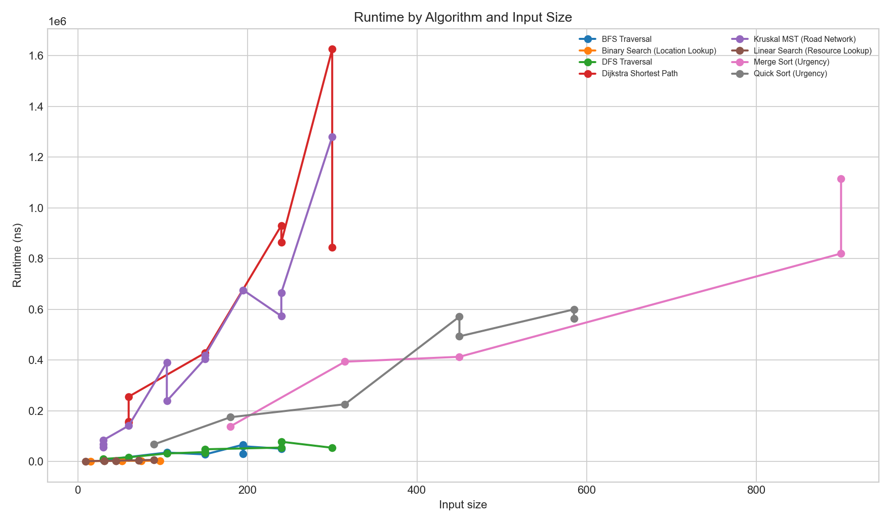
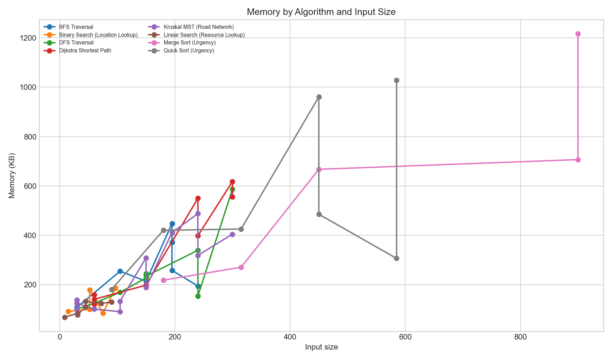
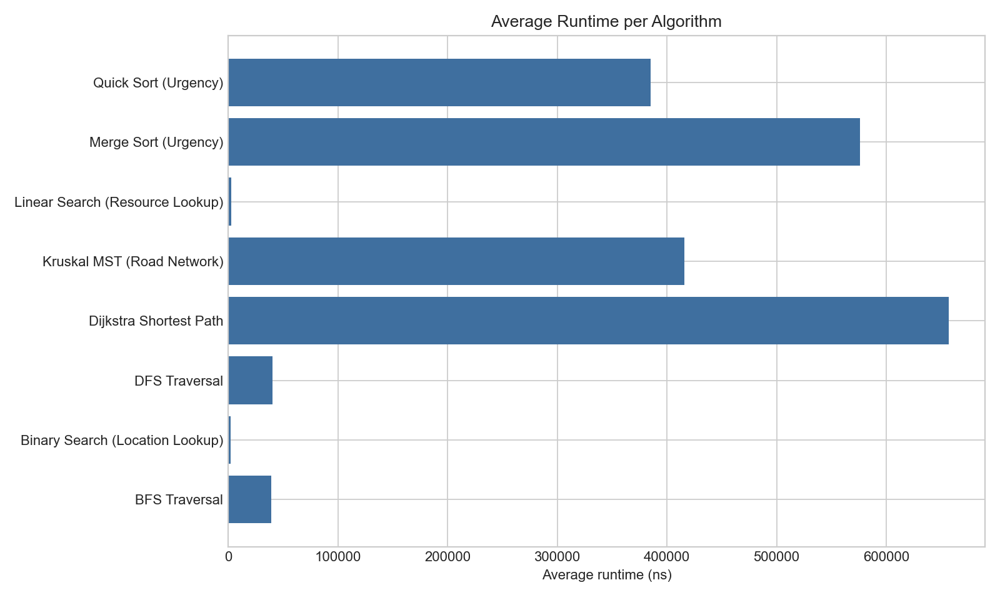
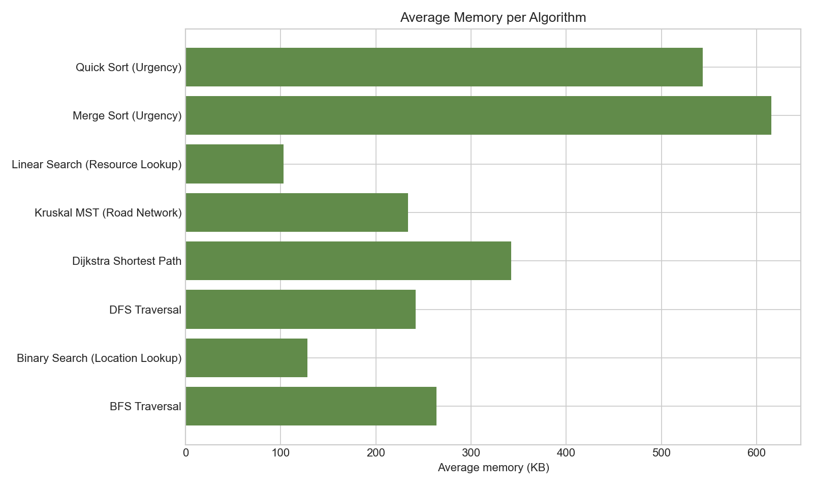

Greater Accra food delivery operations
Food Delivery DSA Project Dashboard
A lightweight static presentation demo for the completed Java 17, SQLite/JDBC, custom data structure, and algorithm implementation.
Dataset Counts
Official normalized filesProject Snapshot
Submission evidence- Tests
- 513 passing
- Dijkstra route
- LOC073 to LOC076, effective time 6.80
- MST
- Prim and Kruskal selected 149 roads
- Priority score
- Sample score 0.732843137254902
Data layer
Official Datasets
These CSV files support routing, request selection, dispatch, performance evidence, and audit structure.
Persistence
SQLite/JDBC Database
The Java app imports operational CSV data into SQLite with JDBC repositories and prepared statements.
| Table | Primary key | Foreign keys / role |
|---|
Custom implementation
Data Structures
Use the filter to quickly find how each custom structure supports the food delivery workflow.
Algorithms
Implemented Algorithms
All listed algorithms are implemented in the Java project and demonstrated with project data or tests.
Committed evidence
Results and Performance
Values here come from the committed evidence files and generated performance graphs.
Dijkstra Fastest Route
LOC073 -> LOC076
Reachable path with total distance 1.68 km and effective travel time 6.80.
Minimum Spanning Tree
Prim and Kruskal both selected 149 roads with total effective cost 1177.18.
Testing
513 tests passed with no failures, errors, or skipped tests.
Priority Scoring
Approved weights: urgency 58/204, deadline 74/204, waiting 72/204. Sample score: 0.732843137254902.




Oral defense helper
What To Say
This short script keeps the presentation focused and reminds the audience that the console app is the official runnable demo.
Explain the dataset
Show the six normalized CSV files and explain that locations and roads form the delivery network while requests and riders drive dispatch decisions.
Explain the database
Describe SQLite through JDBC, primary keys, foreign keys, and prepared statements for safe inserts and reads.
Explain one structure
Use the adjacency list graph as the example: locations are vertices, roads are weighted edges, and routing algorithms run on that graph.
Explain one algorithm
Use Dijkstra: it finds the fastest route by effective travel time, including road condition multipliers.
Explain tests and evidence
Mention 513 passing tests, the Dijkstra result, MST result, priority score sample, and performance graphs.
Close with scope
This page is an optional visual aid. The Java console application remains the official runnable system for assessment.